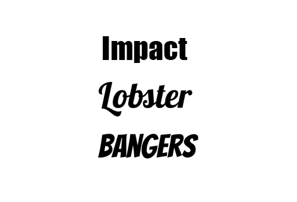
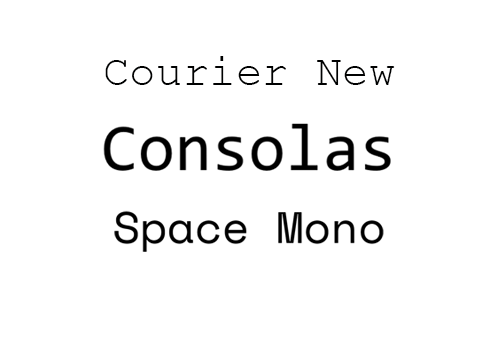

Understanding Different Types of Fonts
Typography plays a vital role in design, influencing how we perceive and interact with text. Fonts come in various styles, each suited for specific uses. Here, we’ll explore the primary font categories in more detail, some popular examples, and where you can download them.
SerifSerif fonts are characterized by small lines or "serifs" attached to the ends of letters. They evoke a sense of tradition, elegance, and formality, making them ideal for print materials such as books and newspapers. These fonts are particularly effective for long-form text as they guide the reader’s eyes smoothly across the page. ExamplesTimes New Roman: A classic and widely used serif font. Georgia: Designed for readability on screens. Garamond: Known for its timeless elegance. |
San SerifSans-serif fonts lack the decorative serifs, offering a clean and modern appearance. These fonts are commonly used in digital formats and are favored for minimalist designs and readability on screens. Sans-serif fonts convey simplicity and directness. ExamplesArial: A versatile and widely used sans-serif font. Helvetica: Renowned for its neutrality and versatility. Impact: Known for its strong and bold presence. Popular for web and mobile interfaces. |
ScriptScript fonts mimic handwriting and calligraphy, often used for invitations, logos, and elegant designs. They can be formal, exuding sophistication, or casual, offering a more relaxed and friendly vibe. ExamplesPacifico: A casual and playful script font. Great Vibes: Elegant and flowing. Brush Script: A retro script font. |
|||
|  | DisplayDisplay fonts are designed for attention-grabbing headings and are less suited for body text. These fonts are often bold, decorative, or quirky, making them perfect for branding, posters, and titles. ExamplesLobster: A stylish and bold font. Bangers: Perfect for comic-style designs. Impact: Known for its strong and bold presence. Popular for web and mobile interfaces. |
 | MonospaceMonospace fonts have characters that occupy equal horizontal space. They are commonly used in programming, technical documents, and coding interfaces. These fonts are praised for their clarity and alignment in structured layouts. ExamplesCourier New: A classic monospace font. Consolas: Ideal for coding and terminal applications. Space Mono: A font where all em-spaces have the same size. |
HandwrittenHandwritten fonts simulate personal handwriting and add a human touch to designs. They’re great for informal and creative projects, conveying warmth and individuality. ExamplesCaveat:Casual and approachable. Dancing Script: Playful and energetic. Shadows Into Light: Light and friendly. |